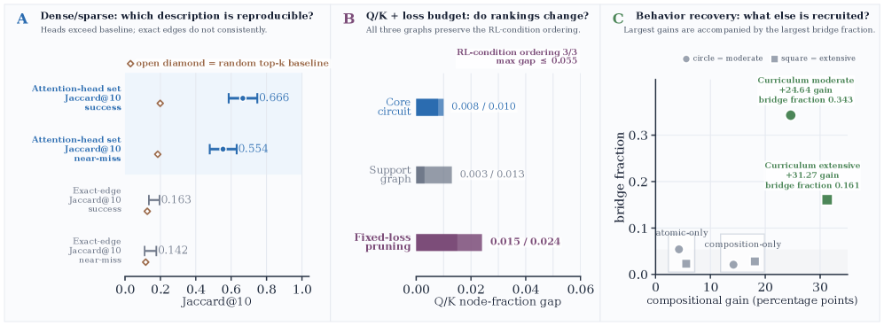
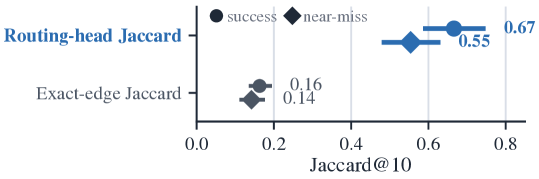

Uses a synthetic Lean tactic-prediction benchmark (predicting next proof tactic) to study circuit-extraction stability in transformers.
Abstract
Circuit extraction identifies a small set of model components whose presence preserves a target behavior under ablation, and the resulting circuit is often read as the mechanism behind that behavior. We argue that this reading is under-determined: preserving behavior does not single out one circuit, because the claim it supports depends on which circuit is reported and how two circuits are compared. We make this concrete in a synthetic Lean tactic-prediction benchmark – predicting the next step of a proof – where fixed proof rules with randomized surface form let differences between extracted circuits be attributed to these choices rather than to the task. Across dense and weight-sparse checkpoints (most weights constrained to zero) of the same transformer, evaluated on atomic (single-rule) and compositional (multi-rule) proofs, we vary which extracted object is reported (a compact prediction-preserving circuit, a broader graph that also keeps surrounding read, write, and routing structure, or the smallest subgraph meeting a post-ablation loss threshold), and whether each attention head's query and key are represented jointly or separately. Exact component-to-component edge overlap is low and sensitive to these choices, at times dropping to a random baseline, while two coarser summaries stay stable: the set of selected attention heads, and the circuit-size ranking of conditions that differ in which supervised checkpoint initializes reinforcement learning (RL). The largest accuracy gains from RL on compositional proofs come with the most structure beyond the atomic circuits. A circuit-level claim is therefore well defined only once one states which circuit is reported, the pruning threshold used to extract it, and the level at which circuits are compared. We distill these requirements into a reporting practice for circuit-extraction studies.
Problem
Circuit extraction in mechanistic interpretability identifies components preserving a target behavior, but the resulting circuit is under-determined: what claim it supports depends on which circuit is reported and how circuits are compared. This ambiguity is hard to isolate in natural-language tasks where atomic subskills are not specified.
Approach
A synthetic benchmark of nine Lean tactic-prediction tasks (four atomic, five compositional) is built from fixed propositional proof rules with randomized surface form, so extraction differences reflect methodological choices rather than the task. Dense and weight-sparse transformer checkpoints, evaluated on atomic and compositional proofs, are compared while varying which extracted object is reported (core circuit, extended support graph, or fixed-loss pruning subgraph), whether attention query/key are merged or separated, and the comparison level. Overlap is measured via exact component-to-component edges versus coarser attention-head sets.

Figure 1 : Overview of the three findings. A : at the primary dense-versus- 75\% -sparse comparison point, the set of selected attention heads overlaps much more across the dense and 75\% weight-sparse RL checkpoints than the exact component-to-component edge lists do; the head-level overlap is also far above a random top- k baseline, while the exact-edge overlap is not consistently above it (Tabl
Results
Exact edge overlap is low and unstable, sometimes at random baseline (Jaccard@10 around 0.16), while routing-head-set overlap stays high (0.67, 0.55) and above random. Object-level node-fraction summaries and RL-condition size rankings are stable across query/key and pruning-threshold choices. The largest compositional RL accuracy gains (+24.64 and +31.27 points) coincide with the largest bridge fractions beyond atomic circuits.

Figure 3 : Routing-head sets are more reproducible than exact edge lists under the same extraction method for dense and 75\% weight-sparse RL checkpoints. The head-level summary groups top routing edges by attention-head identity before computing Jaccard@10. Intervals are 95% bootstrap intervals over matched task-object entries; semantic Jaccard@10 matches structural Jaccard@10 in this comparison
Family
Condition
Δ comp.
Moderately expanded
Curriculum
24.64
Moderately expanded
Composition-only
14.20
Extensively expanded
Curriculum
31.27
Extensively expanded
Composition-only
18.11
Curriculum RL compositional gains and bridge fraction across families